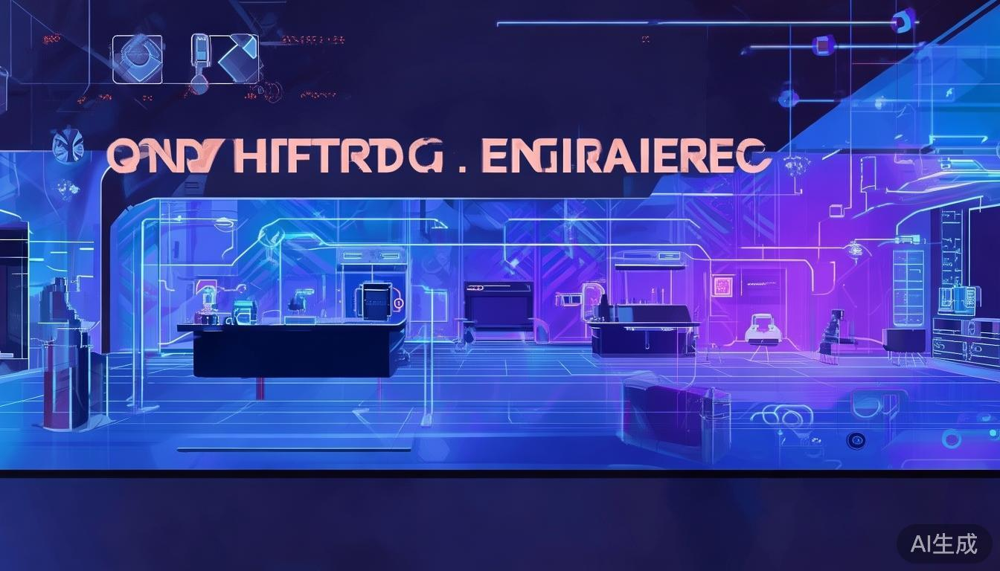

可直接运行的仿真脚本
不想装 Python？直接打开 网页版一键仿真 （滑杆调参，实时出曲线图）
每个脚本都看不懂代码？看 《仿真脚本图文讲解》（10 篇全解：原理图 + 代码逐行 + 参数表 + 真实输出 + 避坑）
想用工业级软件干真活？看 《开源仿真工具进阶案例》（FreeCAD/KiCad/Gazebo/LTspice/OpenFOAM 各 2-3 个能干活的案例）
数控 G 代码（可下载）

学习路线与开源工具
编程与计算机学习路线 —— 从零到能用 AI 结对写代码
算法与数据结构 —— 排序/查找/栈队列/图/动态规划（5 个可跑脚本）
机器学习入门 —— 线性回归/KNN/KMeans（纯 Python 可跑）
数值计算 —— 牛顿法/龙格库塔/数值积分/最小二乘/插值
数学建模 —— 建模六步 + 微分方程模型 + 国赛美赛
数控编程与开源工具 —— CNCjs / UGS / GRBL / LinuxCNC
仿真模拟与开源工具 —— ngspice / Octave / OpenModelica / Gazebo / KiCad
工科如何学 —— 数学是语言、物理是直觉、项目驱动
工科实训项目 —— 5 大类真动手清单
持续集成与部署（CI/CD） —— GitHub Actions 自动跑 pytest + 自动部署网站